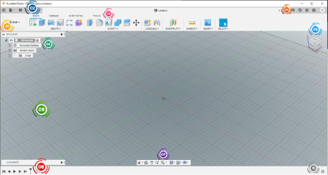
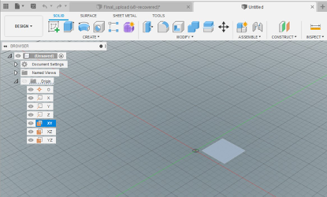
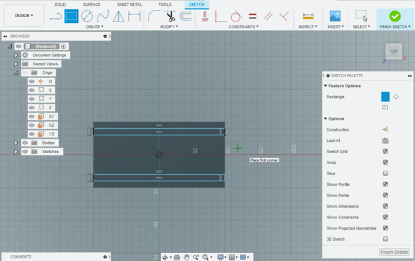
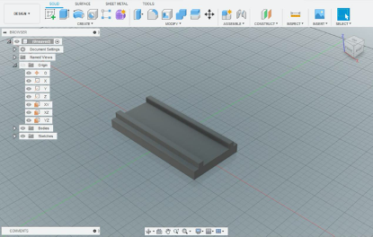
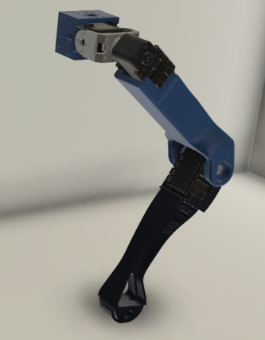
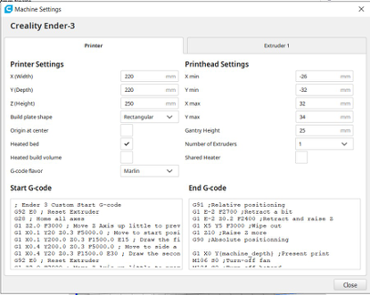
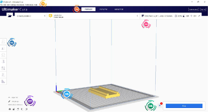
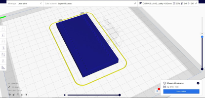

Welcome back!
As Steve Jobs said,"Think different! Do it. But what next?"
How do you go about converting that idea into something real? Something physical that you can touch.
Okay, you got all the software stack, sleepless nights of coding, and your nice little electronics and everything, but you cannot place all that stuff in the air (or can you?). It would be best if you had a physical entity to hold these electronics and other stuff (some people call it chassis or frame) so that the brilliant idea that you had comes to life.
Now there is a traditional way to do this: going to a workshop, getting your hand dirty with some heavy machinery, and crying about not learning how to use a lathe and other machines in our workshop during your first year, still ending up with components that don't fit properly and a lot of sweat.
Now you cannot give up on your brilliant idea just because you don't know how to use a lathe (or even a drill machine, LoL), so what's the other way around? This is where CAD and 3D printing comes to the rescue.
CAD stands for computer-aided design (A mandatory course for Mechanical and Manufacturing students). This involves using a computer to design a 3D model of the components that you want to visualize, but that's not it. CAD Softwares like Fusion 360 are not restricted to just visualizing a 3D model, and they do a lot more amazing things(i mean that "lot").
For the entire blog, we will focus on Fusion 360 as it is readily available to us.(others include SolidWorks, TinkerCAD, FreeCAD, LibreCAD, etc.)
Fusion 360 is a user-friendly software whose first screen looks like this:-
Yeah, it's a typical windows software with view panels, tabs, and buttons with the main area occupying the major portion of the screen.
But the one you just saw is one of the seven workspaces that Fusion 360 offers. Other Workspaces can be accessed by clicking "1" and then select any of the workspaces from the drop-down menu as mentioned below:
We would cover only the Designing part in this blog so, our main window will be the Design window
Now to get started designing we must first know that in Fusion360, we have components and bodies. All bodies have their parent component, and this allows particular settings to be activated or deactivated while selecting a component or body (Generally this won't matter until you don't do something specific to them). General properties will work fine for both like move, extrude, cut, loft, etc.
Now let's jump to practical (enough of building up).
Fusion creates 3D models from 2D sketches. It's like you want to make a Cube, draw a square, and stretch it in the orthogonal dimension (if the square is in the x-y plane, pull it in z).
If you want to make a sphere, draw a circle in the x-y plane and,...... No, don't pull it in z. that would give you a cylinder. Instead rotate that circle with any of its diameter as an axis.
Let's see how this is done.
Focus on "6". By default, we have a single component in our design, which is denoted as (unsaved) as of now. Click on Origins drop-down arrow, and that will show you the planes and origin in your design. Right-click on any one of the plane (let's say x-y) and click on "create sketch." Now you are in sketching mode. Here you create 2D drawings of your model like for cube, a square, cylinder, and a circle. But those are not the only shapes you want, right? You want to make asynchronous gripper with guide rails. Let's explain this by making the guide rail platform.
Select either top or bottom face of the rectangle generated by left mouse clicking. And choose the extrude tool from create panel or hit "E" on keyboard.
Create two long rectangles on the top face of the platform created to make guides( to do this, right-click the top surface of the platform and select create sketch). The sketch will look something like this.
Similar to step 3, we will now extrude the two long rectangles to a minimal height (let's say 5 mm) to make rails.
The final body will look something like this.
Congratulations, you just made your first-ever 3D body (and component as well).
Now this body could have been made in numerous other ways like instead of doing this; we could have drawn the side view and do a single extrude along the x-axis or maybe create a bigger cuboid and remove the upper portion with the cut tool.
The more you explore, the more efficient you become. There are literally around 100 tools in Fusion360, like Extrude. Similar to art, it needs practice. By practicing for some weeks, you can too create models like this-
Now Let's jump to 3D printing.
To 3D print your models, you need to export the bodies created in STL format. We can export the bodies for 3D printing by right-clicking the body in the browse menu and selecting the save as STL option. Choose a resolution according to how sophisticated the body is, and save it anywhere (you would probably save it to Desktop).
Now we are done with Fusion360 and jump to a slicer software.
What is a slicer software?
It is a software that generates the toolpath for the 3D printer from your CAD model. This toolpath is saved as Gcode
file (yeah, the same one that you had in CNC).
We will consider Cura 4.6.2 for the slicer software and Ender3 for our printer.
Launch Cura and do the one-time setup for your printer. It would be something like this-
After setting up, hit the open icon and find your STL file. Click open. The model will load and will automatically be placed so that it touches the build plate.
Use the menu "2" for orienting the model on the build plate and other settings like scaling. After you are happy with orientation, you should define the print settings for your model.
These settings can be found in "3". Now there are more than 100 settings for printing your model, but we will consider only the most important one for now. For example, Infill. It defines the % volume of the model that has to be made solid. If made 100%, the entire model would be solid with no air spaces. If made 0%, the model boundaries will only be printed; the model will be hollow from inside. After setting up the model with appropriate settings, we hit the Slice button ("6").
This generates the Gcode and also the simulation of the model which can be viewed from the preview window under "4". You can use the scroll bar on the right-hand side to view the layers and hit the play button at the bottom-center to simulate the toolpath and finally save the Gcode generated by clicking the save to file menu at the bottom right corner (probably at the Desktop again).
Now load this Gcode file in an SD card and hit eject. After that, plug the card in your 3D printer and start the printing process after loading the filament, bed leveling, and heating.
Congrats, you have given life to your imagination.
If done right, you can achieve this-
See you next week. All the best!